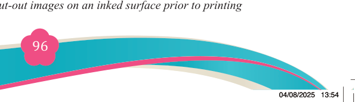
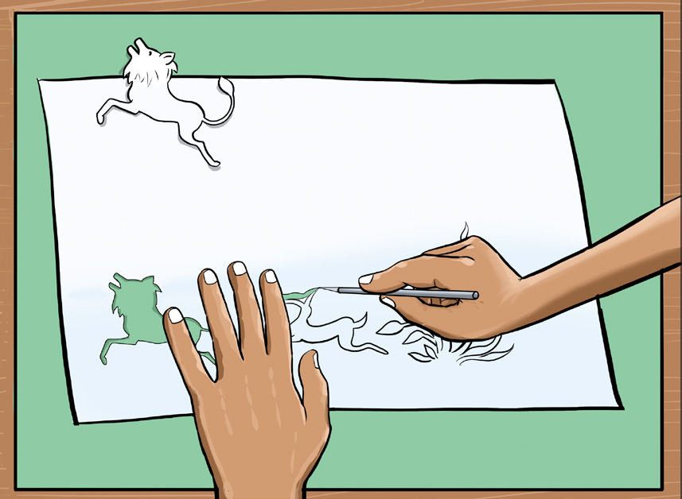
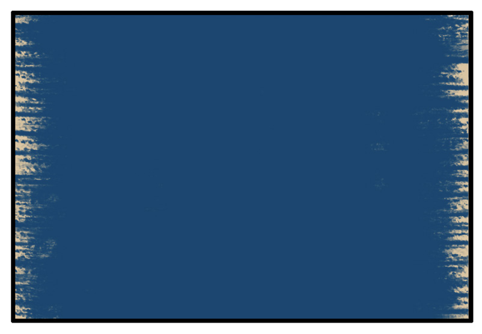
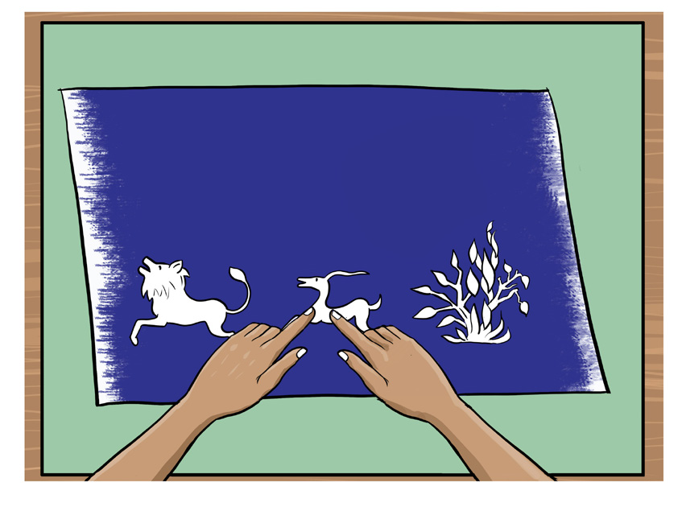

Fine Art for Secondary Schools

96

Student’s Book Form Two


Figure 5.19: Coming-out of the images for stencil monoprint technique

Step 3: Prepare your ink on the surface
Use a roller to spread ink on the surface. You can apply any or more than one colour

Figure 5.20: Ink on a printing surface
Step 4: Arrange the cut-out images
Arrange the cut-out images of your choice (for example animal figures and
trees above on the inked printing surface the way you like.

Figure 5.21: Layout of paper cut-out images on an inked surface prior to printing

04/08/2025 13:54